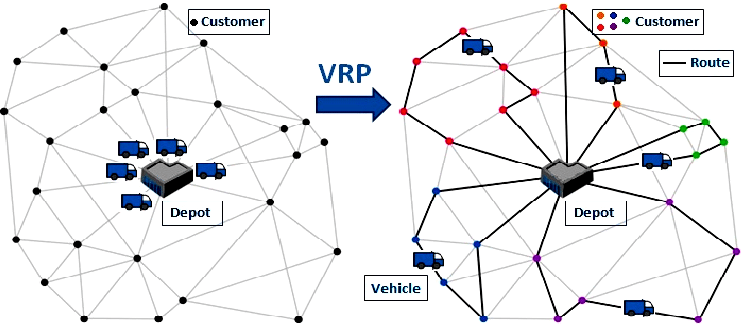
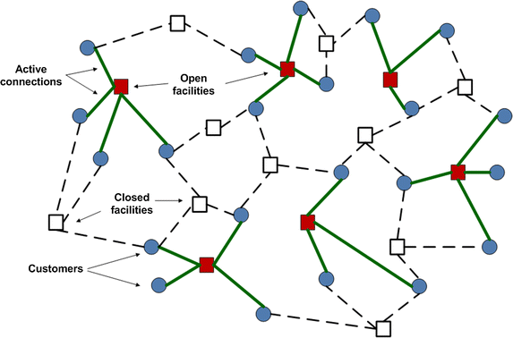
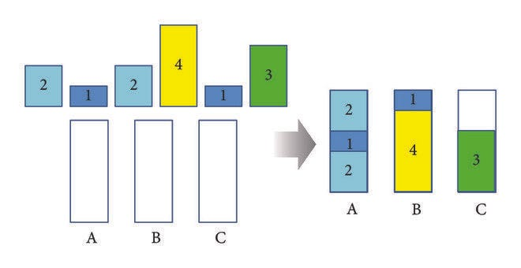
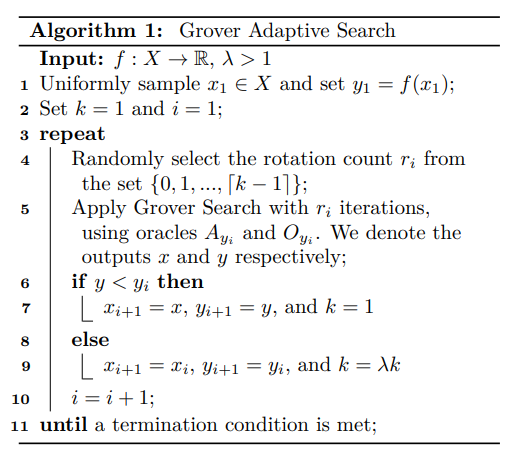
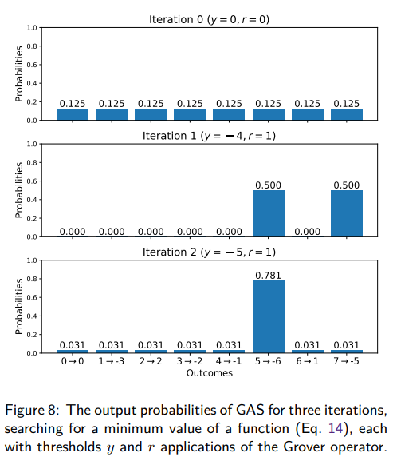
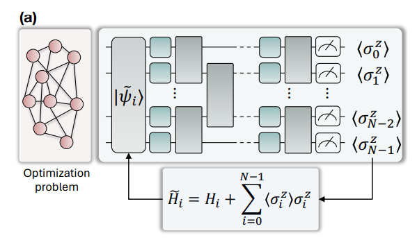

One of the areas in which applied quantum computing seems promising is combinatorial optimization, which covers many real logistics problems. Three examples of problems of this kind are:
Vehicle Routing Problem: given a set of N geographic points and M vehicles, what are the M most efficient routes (with the lowest time and energy consumption) that, together, pass through all the N points?

Illustration of the vehicle routing problem. DOI: 10.1109/ICoAC.2017.8441175
Facility Location Problem: how to position a set of N logistics centers in a region (neighborhood, city, state, etc.) in a way that minimizes costs such as transportation and rent?

Illustration of the facility location problem. DOI: 10.1057/s41274–016–0155–6
Bin Packing Problem: given a set of N objects to transport, each one with a volume and a weight, and a set of up to M containers, each one with a volume and load capacity, how to distribute the N objects among the containers in a way that minimizes the number of containers used?

Illustration of the bin packing problem. DOI: 10.1155/2017/9781307
These three optimization problems belong to the NP-hard computational class. Problems of this class have no known algorithms that solve them exactly in tractable and deterministic time. So, to solve them, we resort to two groups of algorithms that find “ok” solutions, but not necessarily perfect ones (global optima): greedy algorithms and metaheuristics.
Greedy algorithms are those that use some “trick” to quickly find an easy solution in a fixed time (which depends on the number of variables of the problem), without analyzing several possible solutions. Example: to find a good travel route [r₁, r₂, …, rₙ] (where each rᵢ is a stop) passing through a set of N geographic points P={p₁, p₂, …, pₙ}, a greedy strategy that can be used is to choose the starting point r₁∈P, choose the point pᵢ closest to r₁ as r₂, and repeat the second step for all the next stops of the route until rₙ. The solution is good and easy to compute, but it is only the best possible one in very specific cases.
Metaheuristic algorithms are more complex and costly. They search for a solution, often testing several possible ones, using some logical process that serves as a “guide” towards the best solutions of the problem. The execution time of these algorithms is usually adjustable, and the quality of the solution found is not deterministic — it depends on luck and on how long you let the algorithm run.
To solve a logistics optimization problem using a metaheuristic, it is necessary to build a model with the following elements:
a sequence of binary variabless=[s₁, s₂, …, sₙ]∈𝔹ⁿ that, together, represent a configuration or solution of the problem;
a cost functionc=f(s) that calculates the logistics cost c∈ℝ of the solution s∈𝔹ⁿ;
if necessary, one or more constraints. Each constraint is a proposition g(s)∈{T,F} that s must satisfy to be considered a feasible solution.
Solving an optimization problem means finding a solution s=[s₁, s₂, …, sₙ] that minimizes the logistics cost c.
In the scientific literature on quantum computing, there are several proposed metaheuristics that can be applied to logistics problems such as the three mentioned above. In this article, I cover four: GAS, QA, QAOA and BF-DCQO.
Grover Adaptive Search (GAS)

Pseudocode of the GAS algorithm, taken from the paper by Gilliam, Woerner and Gonciulea.
GAS is an optimization metaheuristic based on Grover's quantum search algorithm.
Grover's search is a probabilistic method that aims to find the sequences of values (s₁, s₂, …, sₙ) that satisfy a proposition p(s₁, s₂, …, sₙ)∈{T, F}. The GAS method uses Grover's search as a subroutine, running it several times to find increasingly better solutions to the optimization problem, as follows:
Using a random or greedy method, the logistics cost c⁽¹⁾ of a locally optimal solution s⁽¹⁾ is calculated.
Grover's search is run to find a solution s⁽²⁾ whose logistics cost c⁽²⁾ is lower than the cost c⁽¹⁾ found previously.
The procedure of step 2 is repeated several times, always with the aim of finding a new solution s⁽ⁱ⁺¹⁾ with a cost c⁽ⁱ⁺¹⁾ lower than c⁽ⁱ⁾.

Charts taken from the paper by Gilliam, Woerner and Gonciulea, showing the evolution of the probabilities of obtaining the solutions of an optimization problem with GAS.
Strengths of GAS:
It is relatively simple, easy to understand and to implement. The other three quantum optimization methods that I cover in this article are much more complicated.
Weaknesses of GAS:
GAS is a method that uses many qubits. In it, the logistics costs are computed as a finite and quantized set of integer or decimal numbers. The greater the precision required to calculate the costs, the more qubits are used.
In GAS, as the optimization process advances, the quantum processing time required for each round of Grover's search increases. Current quantum devices have limited coherence time, which makes long search rounds impossible.
Bibliography:
Grover Adaptive Search for Constrained Polynomial Binary Optimization, by Austin Gilliam, Stefan Woerner, and Constantin Gonciulea. DOI: https://doi.org/10.22331/q-2021-04-08-428
Conceptual image of how a quantum annealer works. DOI: 10.5194/npg-31–237–2024
QA is a quantum optimization technique initially proposed by Kadowaki and Nishimori in 1998, based on the quantum adiabatic theorem.
QA requires special-purpose analog quantum hardware. It is not possible to run this technique on digital (general-purpose) quantum computers such as IBM's. A company that stands out in the development of hardware for QA is D-Wave.
At the hardware level, a Quantum Annealer such as D-Wave's is an electronic device that uses superconducting qubits interconnected and controlled by extremely precise magnetic fluxes. These qubits form a physical system that models the optimization problem.
Throughout an optimization task, the magnetic fluxes are changed gradually and slowly, causing the system to evolve adiabatically into a solution state. At the end of the process, the qubits are measured, collapsing into a classical sequence of bits that represents a solution (or a good approximation) of the optimization problem.
Strengths of QA:
QA is highly scalable in number of qubits. Currently, there are already quantum annealers with thousands of qubits, while digital quantum computers still operate with a few hundred qubits.
Quantum annealers are more noise-tolerant than digital quantum computers.
Weaknesses of QA:
There are few QA service options on the market.
In the process of programming a quantum annealer, an embedding step is usually used. In this step, the number of qubits required to solve the problem may increase significantly.
If the annealing time is not slow enough, the system tends to evolve non-adiabatically, which harms the quality of the results.
Simplified diagram of the QAOA algorithm. Source: Matlab Help Center
QAOA is a hybrid (quantum and classical) optimization algorithm from the group of variational quantum algorithms (VQAs).
VQAs are algorithms in which a digital quantum computer is used to run a parameterized quantum subroutine. The subroutine is run multiple times, and a classical optimizer adjusts its parameters at each iteration.
The quantum subroutine of QAOA has 3 steps:
preparation of an initial quantum superposition state;
addition of N layers of parameterized quantum instructions, where each layer is composed of a cost operator and a mixing operator;
measurement of the quantum state, which results in a classical sequence of bits from which a solution s⁽ⁱ⁾ is obtained.
The cost operator serves, roughly speaking, to calculate the logistics cost of each possible solution of the optimization problem. In each layer, this operator has a parameter γᵢ.
The mixing operator, in turn, serves to induce changes in the quantum state of the qubits, gradually leading them to the solution state. In each layer, a parameter βᵢ is associated with the respective mixing operator.
The parameters [γ₁,…,γₙ,β₁,…,βₙ] are iteratively adjusted by a classical numerical optimization algorithm with the goal of reducing the cost c⁽ⁱ⁾ of each solution s⁽ⁱ⁾. To make these adjustments, gradient methods similar to those used to train neural networks can be used.
Strengths of QAOA:
QAOA is designed to fit well with the limited digital quantum computers we have today. The quantum processing time of steps 1–3 is adjustable, constant over the iterations, and not necessarily long.
It does not require special-purpose quantum hardware.
In QAOA, the precision of the logistics costs does not depend on the number of qubits, since they are computed as eigenvalues of the cost operator.
Weaknesses of QAOA:
A typical obstacle of variational quantum algorithms are Barren Plateaus (BPs). In simple terms, BPs are “traps” into which the classical computer can fall during the process of adjusting the parameters [γ₁,…,γₙ,β₁,…,βₙ], stalling the optimization.
The noise of current quantum computers also hinders the adjustment of the parameters.
The logistics cost is computed approximately by the cost operator. The more precise this approximation, the longer the required quantum processing time.
A Review on Quantum Approximate Optimization Algorithm and its Variants, by Kostas Blekos, Dean Brand, Andrea Ceschini, Chiao-Hui Chou, Rui-Hao Li, Komal Pandya and Alessandro Summer. DOI: https://doi.org/10.1016/j.physrep.2024.03.002
Bias Field Digitalized Counterdiabatic Quantum Optimization (BF-DCQO)

Illustration of BF-DCQO taken from the original paper by Cadavid et al.
BF-DCQO is a metaheuristic inspired by the quantum adiabatic theorem — the same one that underlies the QA technique. The algorithm was published in April of this year (2025) by Alejandro Cadavid, Archismita Dalal, Anton Simen, Enrique Solano and Narendra N. Hegade.
BF-DCQO is an approximate and digitized adiabatic quantum optimization (AQO) method that can be run on general-purpose quantum computers.
An important feature of the BF-DCQO algorithm is that it adds a counterdiabatic term to the system, which suppresses unwanted non-adiabatic transitions in the state of the qubits. As explained in the section about QA, non-adiabatic transitions harm the quality of the solutions.
Like QAOA, BF-DCQO splits the quantum processing into “rounds” of a quantum subroutine of fixed and short duration, while the processing between rounds is done by a classical computer. However, in contrast to QAOA, BF-DCQO is not a variational algorithm (that is, it does not involve classical optimization of parameters). The work of the classical computer is much lighter in BF-DCQO than in QAOA.
Strengths of BF-DCQO:
It does not require special-purpose quantum hardware.
The quantum processing rounds are fast, which reduces noise.
Since it is not variational, its classical processing is light and does not suffer from Barren Plateaus.
As in QAOA, the precision of the logistics costs in BF-DCQO does not depend on the number of qubits.
Since this is a new technique that I have started studying recently, I do not have a list of weaknesses that I can point out with confidence.
Bibliography:
Bias-field Digitized Counterdiabatic Quantum Optimization, by Alejandro Cadavid, Archismita Dalal, Anton Simen, Enrique Solano and Narendra N. Hegade. DOI: https://doi.org/10.1103/PhysRevResearch.7.L022010
Final remarks
This article does not aim to benchmark optimization methods applied to logistics, nor to claim that the quantum approaches described outperform existing classical methods. The performance of any metaheuristic depends on several factors, such as the convexity of the problem, the number of variables involved, the polynomial degree of the cost function and the nature of the constraints. In the case of quantum metaheuristics, there is also a strong dependence on specific hardware characteristics, such as coherence time, number of available qubits and the connectivity between them.